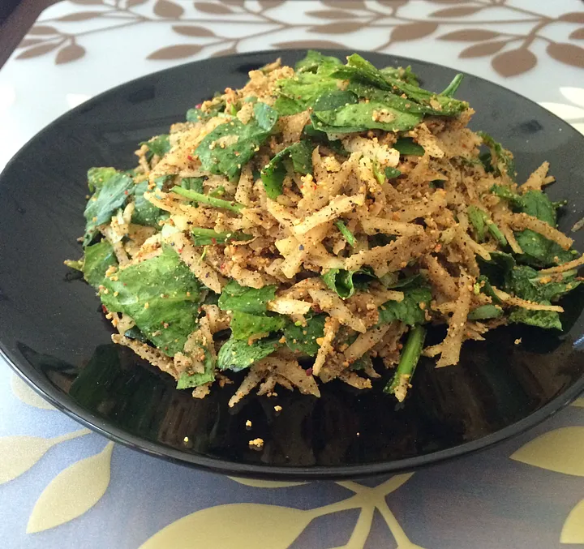

Famous Foods of Manipur
Eromba

Eromba Recipe:
- Ingredients:
- 4-5 green chilies
- 2 medium-sized potatoes, boiled and mashed
- 1 small onion, finely chopped
- 1 tablespoon fermented fish (optional)
- 1 teaspoon turmeric powder
- 1 teaspoon ginger-garlic paste
- 2 tablespoons oil
- Salt to taste
- Coriander leaves for garnish
- Instructions:
- Heat oil in a pan, add onions and ginger-garlic paste. Sauté until onions turn golden brown.
- Add green chilies and turmeric powder. Cook for a minute.
- Add boiled potatoes and mix well. Cook for a few minutes, adding water as needed to adjust consistency.
- Add fermented fish if using, and salt. Cook for another 5 minutes.
- Garnish with coriander leaves and serve hot with steamed rice.
Chakhao Kheer

Chakhao Kheer Recipe:
- Ingredients:
- 1 cup Chakhao rice (black rice)
- 2 cups milk
- 1/2 cup sugar
- 1/4 cup dried fruits (cashews, almonds, raisins)
- 1/2 teaspoon cardamom powder
- 1 tablespoon ghee
- Water as needed
- Instructions:
- Wash and soak Chakhao rice in water for 30 minutes.
- Heat ghee in a pan, add dried fruits, and sauté until golden brown.
- Add soaked rice and cook for a few minutes.
- Add milk and cook on low heat until the rice is fully cooked and the mixture thickens.
- Add sugar and cardamom powder. Mix well and cook for another 5 minutes.
- Serve warm or chilled.
Singju

Singju Recipe:
- Ingredients:
- 1 cup kangkong (water spinach) or any leafy greens
- 1 small onion, finely chopped
- 2-3 green chilies, chopped
- 1 tablespoon roasted sesame seeds
- 1 tablespoon fermented bamboo shoots (optional)
- 1 tablespoon oil
- Salt to taste
- Instructions:
- Heat oil in a pan, add onions and green chilies. Sauté until onions are translucent.
- Add leafy greens and cook until wilted.
- Add roasted sesame seeds and fermented bamboo shoots if using.
- Mix well and cook for a few more minutes.
- Season with salt and serve warm with steamed rice.